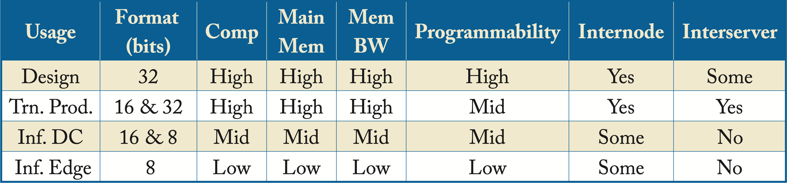

Chapter 1: Introduction
A deep learning (DL) model is a function that maps input data to an output prediction. To improve the accuracy of the prediction in complex tasks, DL models are increasingly requiring more compute, memory, bandwidth, and power, particularly during training. The number of computations required to train and deploy state-of-the-art models doubles every \({\sim}3.4\) months [DH18]. The required computation scales at least as a fourth-order polynomial with respect to the accuracy and, for some tasks, as a nineth-order polynomial [TGL+20]. This appetite for more compute far outstrips the compute growth trajectory in hardware and is unsustainable. In addition, the main memory bandwidth is becoming a more significant bottleneck; computational capacity is growing much faster than memory bandwidth, and many algorithms are already bandwidth bound.
The evolution of computational growth is driving innovations in DL architectures. Improvements in transistor design and manufacturing no longer result in the previously biennial \(2\times\) general-purpose computational growth. The amount of dark silicon, where transistors cannot operate at the nominal voltage, is increasing. This motivates the exploitation of transistors for domain-specific circuitry.
Data scientists, optimization (performance) engineers, and hardware architects must collaborate on designing DL systems to continue the current pace of innovation. They need to be aware of the algorithmic trends and design DL systems with a \(3\)-\(5\) year horizon. These designs should balance general-purpose and domain-specific computing and accommodate for unknown future models.
The characteristics of DL systems vary widely depending on the end-user and operating environment. Researchers experimenting with a broad spectrum of new topologies (also known as DL algorithms or neural networks) require higher flexibility and programmability than engineers training and deploying established topologies. Furthermore, even established topologies have vastly different computational profiles. For instance, an image classification model may have a compute-to-data ratio three orders of magnitude higher than that of a language translation model.
A mixture of specialized hardware, higher bandwidth, compression, sparsity, smaller numerical representations, multichip communication, and other innovations is required to satisfy the appetite for DL compute. Each \(2\times\) in performance gain requires new hardware, compiler, and algorithmic co-innovations.
Advances in software compilers are critical to support the Cambrian explosion in DL hardware and to effectively compile models to different hardware targets. Compilers are essential to mitigate the cost of evaluating or adopting various hardware designs. A good compiler generates code that runs efficiently and speedily executes. That is, the generated code takes advantage of the computational capacity and memory hierarchy of the hardware so the compute units have high utilization. Several efforts, detailed in Chapter 9, are ongoing toward making this possible.
The purposes of this book are (1) to provide a solid understanding of the design, training, and applications of DL algorithms, the compiler techniques, and the critical processor features to accelerate DL systems, and (2) to facilitate co-innovation and advancement of DL systems.
In this chapter, we introduce the fundamental concepts detailed throughout the book. We review the history, applications, and types of DL algorithms. We provide an example of training a simple model and introduce some of the architectural design considerations. We also introduce the mathematical notation used throughout parts of the books.
1.1 Deep Learning in Action
DL models are tightly integrated into various areas of modern society. Recommender models recommend ads to click, products to buy, movies to watch, social contacts to add, and news and social posts to read. Language models facilitate interactions between people who speak different languages. Speech recognition and speech generation advance human-machine interactions in automated assistants. Ranking models improve search engine results. Sequence models enhance route planning in navigation systems. Visual models detect persons, actions, and malignant cells in MRI and X-ray films.
Other DL applications are drug discovery, Alzheimer diagnosis prediction, asteroid identification, GUI testing, fraud detection, trading and other financial applications, neutrino detection, robotics, music and art generation, gaming, circuit design, code compilation, HPC system failure detection, and many more.
Despite their tremendous success across multiple prediction domains, DL algorithms have limitations. They are not yet reliable in some behavior prediction, such as identifying recidivism, job success, terrorist risk, and at-risk kids [Nar19]. Other areas with limited functionality are personalized assistants and chatbots.
Another limitation is in Artificial General Intelligence (AGI), sometimes referred to as Strong AI. AGI is where machines exhibit human intelligence traits, such as consciousness and self-awareness. The tentative time when machines reach this capability was coined by John Von Neumann as the singularity. There are mixed opinions in the AI community on the timing of singularity ranging from later in this century to never. Given the extremely speculative nature, AGI is not discussed further.
The adoption of DL is still in its infancy. There are simpler machine learning algorithms that require less data and compute, which are broadly adopted across industries to analyze data and make predictions. These include linear regression, logistic regression, XGBoost, and LightGBM (do not worry if you are unfamiliar with these algorithms). The majority of the winning solutions to popular Kaggle challenges involve these computationally simpler algorithms.
Nevertheless, interest in DL is extraordinarily high, and its adoption is rapidly growing. High-technology companies with warehouse-scale computers (WSC) [BHR18], referred to hereafter as hyperscale companies or hyperscalers, use DL in production primarily for these workloads (in order of importance):
-
Recommendations (due to the monetization benefits) for personalized ads, social media content, and product recommendations.
-
Natural language processing (NLP) for human-machine interaction by virtual assistants (Alexa, Siri, Cortana, G-Assistant, and Duer) and chatbots/service-bots, to combat language toxicity, for language translation, and as a preprocessing step to a recommendation workload.
-
Computer vision for biometrics, autonomous driving, image colorization, medical diagnosis, and art generation.
Recommender topologies are critical to several hyperscalers; they are more closely tied to revenue generation than computer vision and NLP topologies. The overall number of servers in data centers dedicated to recommenders is likely higher than NLP and computer vision. For instance, at Facebook, recommender models account for over 50% of all training cycles and over 80% of all their inference cycles [Haz20; NKM+20].
Computer vision topologies are widely adopted across enterprise data centers and on client devices, such as mobile phones. When companies begin the adoption of DL, they often start with computer vision topologies. These topologies are the most matured and provide significant gains over non-DL approaches. Given that several open-source datasets are available in this area, the overwhelming majority of academic papers focus in computer vision: \(82\%\); compared to \(16\%\) for NLP and \(2\%\) for recommenders due to limited public datasets [Haz20].
Model training and serving have different requirements. Training can be computationally intensive. For instance, the popular image classification ResNet-50 model requires about \(1\) Exa (\(10^{18}\)) operations and is considered small by today's standards [YZH+18]. Training the much larger Megatron-LM model requires \(12\) Zetta (\(12\times 10^{21}\)) operations [SPP+19]. Other models, such as some recommenders, have unique challenges often not only requiring high compute but large memory capacity and high network and memory bandwidth.
During the training process, multiple samples are processed in parallel, improving data reuse and hardware utilization. Except for memory capacity bounded workloads, most large model training happens on GPUs due to their higher (compared to CPUs) total operations per second, higher memory bandwidth, and software ecosystem.
Serving, also known as inference, prediction, deployment, testing, or scoring, is usually part of a broader application. While one inference cycle requires little compute compared to training, the total compute spent on inference on a given model dwarfs that of training over the entire life span of the model.
Serving is typically latency bounded. Product recommendations, search results, voice assistant queries, and pedestrian detection in autonomous vehicles require results within a prespecified latency constraint. Thus, during serving, only one or a few samples are typically processed to meet the latency requirement. Effectively parallelizing the serving computations for one data sample across a large number of cores is challenging. For this reason, GPUs (and CPUs to a lesser extend) suffer from poor compute utilization during serving. There is an opportunity for hardware architects to design better low-latency processors and minimize idle compute cycles, detailed in Chapter 7.
Serving in data centers typically happens on CPUs due to their higher availability, higher core frequency, and higher compute utilization for small batches. Given the parallelization challenges when using one data sample, fewer faster cores in a CPU may be advantageous over many slower cores in a GPU. Using more cores can further reduce the latency at the expense of lower core utilization (due to the core-to-core communication overhead). However, as models grow and require more compute, some companies are transitioning to GPUs or experimenting with dedicated processors for inference. In addition, low power (smaller) GPUs or GPUs with virtualization reduces the number of cores allocated to a workload, which improves core utilization.
1.2 AI, ML, NN, and DL
The terms artificial intelligence (AI), machine learning (ML), neural network (NN), and deep learning (DL) are often used interchangeably. While there are no agreed-upon standard definitions, the following are common and captured in Figure 1.1.
Figure 1.1: Deep learning is a subset of neural networks, which is a subset of machine learning, which is a subset of artificial intelligence.
AI is any program or system that can learn, act, or adapt. The recent popularity of AI comes from advances in ML algorithms, specifically in DL. An ML model is a program that learns a function that maps the input data (or features extracted from the input data) to a desired output. Geometrically, this mapping is from a vector space where the data is not linearly separable to a vector space where the data is linearly separable, as illustrated in Figure 1.2. These vector spaces are formally known as Hilbert spaces or manifolds. The mapping function or statistical performance (accuracy) of the model usually improves with more data.
Figure 1.2: A machine learning algorithm maps the input data to a space or manifold where the data can be classified with a linear classifier. Source: [Wik11] (CC BY-SA 4.0).
NN models, also called artificial neural networks (ANNs), are typically composed of simple nonlinear functions, called layers, stacked together to represent complex functions or mappings. Stacking multiple linear functions results in one linear function that can be represented with one layer, and would negate the benefit of multilayer mappings. Thus, the need for nonlinear functions. DL models, sometimes called deep neural networks (DNNs), are NN models with more than three layers and are end-to-end differentiable. Traditional machine learning (non-NN ML) models and NN models with \(1\)-\(3\) layers are also called shallow models.
A difference between traditional ML and most of DL is traditional ML relies on domain experts to specify key features to use for the given task. In contrast, DL typically learns these features at the expense of requiring more data and compute. For decades, computer vision experts spent significant efforts studying image features to improve detection [FGM+10]. DL practitioners with limited computer vision expertise demonstrated that NNs were able to learn features with increasing complexity at each layer and outperform state-of-the-art techniques in image detection and classification tasks [KSH12].
DL models are particularly advantageous, although requiring much more data and compute, over traditional ML models for workloads where the relationship between features cannot be reasonably approximated, such as with visual, text, or speech data. Traditional ML models continue to be popular with tabular or structured data where the feature relationships can be approximated, for instance, using a Bayesian model to encode the hierarchical relationships manually (do not worry if you are unfamiliar with Bayesian models) [DWO+19].
1.3 Brief History of Neural Networks
NNs were popularized in the 1960s and used for binary classification. Their popularity diminished in the 1970s when NNs did not deliver on the hype. Interest in NNs increased in the mid-1980s when the backpropagation algorithm (detailed in Chapter 4) was rediscovered, facilitating the training of multilayer NNs to learn more complex classifiers. In the mid-1990s, most of the AI focus shifted toward support vector machines (SVMs), a class of ML algorithms with theoretical performance bounds. The NN community refers to the 1970s as the first AI winter and the mid-1990s to early 2000s as the second AI winter due to the limited funding of and progress in NNs (these should be called NN winters since AI is bigger than NNs).
During the past decade, there has been a revived interest as NN have vastly outperformed other techniques, particularly for vision and natural language processing tasks. This recent success is due to faster and cheaper hardware, more massive datasets, improved algorithms, and open-source software [SAD+20]. Researchers from competing companies often publish their algorithms and training methodologies (but typically not their trained models or datasets); thus, they build on each other's knowledge and accelerate progress.
1.4 Types of Learning
ML algorithms usually fall into one of four learning types or categories: supervised, unsupervised, semi-supervised, and reinforcement learning (RL), as shown in Figure 1.3 and discussed below. Despite the names, all these learnings are "supervised" in that they required a human to explicitly define the cost function that determines what is good or bad. Note that a different way to categorize ML algorithms is as discriminative or generative. A discriminative algorithm learns to map the input data to a probability distribution. A generative algorithm learns statistical properties about the data and generates new data.
Figure 1.3: The four types of ML algorithms.
1.4.1 Supervised Learning
Supervised learning is the most common type used in industry due to the monetization advantages and it is the primary, but not exclusive, focus of the models presented in this book. Supervised learning uses annotated or labeled data for training, meaning the ground truth or the desired output of the model for each data sample in the training dataset is known. Training involves learning a function that approximately maps the input to the desired output. The function can be a regression or a classification function. Regression functions have a numerical or continuous output, such as the price of a house (the input data would be features of the house, such as house size and local school rating). Classification functions have discrete or categorical outputs, such as {car, pedestrian, road} (the input data would be image pixels). The majority of DL models used in industry are for classification tasks. Figure 1.3a shows a classification example with the learned linear decision boundaries between three different classes. The green circles, red crosses, and blue stars represent 2D features extracted from samples in each class.
Examples of supervised learning tasks with input data and labels are (task: input data \(\rightarrow\) label):
-
Image classification: pixels \(\rightarrow\) class label of the object in an image
-
Image detection: pixels \(\rightarrow\) bounding box around each object in an image and the class label of those objects
-
Recommender system: shopping history, IP address, products \(\rightarrow\) product purchased
-
Machine translation: sentence in the source language \(\rightarrow\) sentence in the target language
-
Speech recognition: sound waves \(\rightarrow\) written text
-
Speech generation or text-to-speech (TTS): written text \(\rightarrow\) sound waves
-
Regression analysis: house size, local school rating \(\rightarrow\) price of the house
1.4.2 Unsupervised and Self-Supervised Learning
Unsupervised learning learns patterns in unlabeled data. Figure 1.3b shows a clustering example with the learned clusters on unlabeled data. Self-supervised learning is a subset of unsupervised learning and includes learning embeddings and predicting missing words or pixels in text or images. For instance, each word in a 10,000-words-language can be represented as a 10,000-dimensional vector of all zeros except for a one at the index of the particular word. This vector is called a one-hot vector, shown in Figure 1.4. Self-supervised learning models can learn to map this sparse vector to a small and dense vector representation. Other examples are learning dense vector representations for persons in a social network and products in a large catalog. These dense vector representations are often the inputs into a supervised learning model.
Figure 1.4: One-hot vector. All entries are zero except a one at the vector entry corresponding to the word.
1.4.3 Semi-Supervised Learning
Semi-supervised learning combines techniques from supervised and unsupervised learning. Figure 1.3c shows a small labeled dataset augmented with a much larger unlabeled dataset to improve (over the supervised learning algorithm) the decision boundaries between the classes. While most of the past decade's success has been with supervised learning, semi-supervised learning is a promising approach given the massive amounts of unlabeled data generated each day. Moreover, to draw inspiration from human learning, children appear to learn using mostly unlabeled data. However, adoption in industry is limited.
1.4.4 Reinforcement Learning
RL is used to teach an agent to perform certain actions based on rewards received after a set of actions. The agent's goal is to maximize the rewards. Figure 1.3d depicts an agent interacting with the environment. The agent gets a reward based on the outcome of a given action. There are three types of RL algorithms: Q-learning, policy optimization and model-based, detailed in Section 3.4.
1.5 Types of Topologies
A topology is a computation graph that represents the structure or architecture of a NN, as shown in Figure 1.5. The nodes represent operations on tensors (multidimensional arrays), and the edges dictate the data flow and data-dependencies between nodes.
Figure 1.5: A computation graph takes a tensor input and produces a tensor output. Serving involves typically one forward propagation. Training involves numerous forward and backward iteration cycles.
The main types of topologies used in commercial applications are multilayer perceptrons (MLPs), convolution neural networks (CNNs), recurrent neural networks (RNNs), and transformer networks. These topologies are introduced below and detailed in Chapter 3. Other types of topologies common in research with some adoption in commercial applications are graph neural networks (GNNs), adversarial networks (ANs), and autoencoders (AEs). Bayesian neural networks (BNNs) and spiking neural networks (SNNs) are limited to research.
1.5.1 Multilayer Perceptron
A feedforward neural network (FFNN) is a directed acyclic graph (DAG) with an input layer, an output layer, and one or more layers in between called hidden layers. The nodes in the input layer have no parent nodes, and the nodes in the output layer have no children nodes. The inputs are either learned or extracted from the data. These models are the most widely used by hyperscalers, in particular (but not exclusively), for recommender systems.
An MLP is a vanilla FFNN with affine layers, also called fully connected layers, with each layer followed by an activation function. An affine layer is composed of units that linearly combine the weighted outputs or activations from the previous layer plus a bias (the bias is considered another weight). Using multiple layers enables the MLP model to represent complex nonlinear functions [HSW89]. Geometrically, an MLP model attempts to map one vector space to another vector space, where the data is linearly separable, via multiple nonlinear transformations, as shown in Figure 1.2. In this new manifold, the last FFNN layer is a linear classifier that separates most of the data from different classes.
Figure 1.6 shows a four-layer MLP used for digit classification with Layer \(0\) having \(D^{(0)}=784\) units corresponding to each pixel (the input image has \(28\times 28\) pixels), Layers 1 and 2 are hidden units having \(D^{(1)}=128\) and \(D^{(2)}=32\) units, and Layer \(3\) having \(D^{(3)}=10\) units corresponding to the \(10\) possible digits, where \(D^{(l)}\) is the number of units or dimensions of Layer \(l\). In Section 1.6, we detail how to train this model. In practice, a CNN model is a better choice for digit classification; we use an MLP model to introduce this type of topology with a simple example.
Figure 1.6: An MLP with four layers: the input layer, two hidden layers, and the output layer. This model maps the \(784\) pixel values to a probability distribution over \(10\) possible classes.
1.5.2 Convolutional Neural Network
A CNN is a special type of FFNN widely used for computer vision applications, such as image classification, image detection, image similarity, semantic segmentation, human pose estimation, action recognition, and image feature extraction. Commercial applications include facial recognition, visual search, optical character recognition for document scanning, X-ray tumor detection, drug discovery, and MRI analysis. Figure 1.7 shows the input to a CNN and the output activations at each layer. Convolutional units are explained in detail in Section 2.3, and various CNN models used in production are discussed in Section 3.2.
Figure 1.7: A CNN model with several layers maps the input image to a probability distribution across multiple possible labels. Source: [Wik15] (CC BY-SA 4.0).
CNNs are also used as image feature extractors; the output of one of the last layers (usually the second-to-last layer) is used as a feature vector representing the image. This vector becomes the input to other algorithms, such as an RNN to generate a textual description of the image, or to a reinforcement agent learning to play a video game, or to a recommender system that uses visual similarity.
1.5.3 Recurrent Neural Network
An RNN is a directed graph with nodes along a temporal or contextual sequence to capture the temporal dependencies. RNN models are used with sequential data common in language tasks and time-series forecasting. Commercial applications include stock price forecasting, text summarization, next-word recommendation, language translation, simple chatbot tasks, image description generation, speech recognition, and sentiment analysis.
The RNNs inputs and outputs can vary in length, unlike in MLP and CNN models. For instance, in machine translation, the input and output sentences have a different number of words. An RNN can be unrolled and represented as an FFNN sharing the same weights across the layers, as shown in Figure 1.8.
Figure 1.8: An RNN topology can be represented as an FFNN topology with the same weights \(\mathbf{W}\) across all the layers.
RNN models can be stacked with multiple layers and also bidirectional, as shown in Figure 1.9. The main building block of an RNN model is a recurrent unit that captures a representation or "memory" of the aggregated relevant data from previous steps. There are three main types of RNN models depending on the type of recurrent units they use: vanilla RNN, LSTM, and GRU units, detailed in Section 2.5. In the literature, the term RNN denotes either a vanilla RNN or, more broadly, these three types of models. In this book, when referring to a vanilla RNN model, we explicitly use the term vanilla RNN to prevent confusion. LSTM and GRU models are usually favored over vanilla RNN models for their superior statistical performance.
Figure 1.9: A bidirectional RNN model with two layers.
RNN models have two significant challenges: (1) capturing the dependencies in long sequences and (2) parallelizing the computation (due to the sequential nature where the output at a given timestep depends on the previous timestep). Using attention layers, detailed in Section 2.8, mitigates these challenges. Concatenating multiple sequential outputs from the first layer in the stack and passing those as inputs to the second layer in the stack improves the computational efficiency in a model with multiple layers [HSP+19].
1.5.4 Transformer Networks
A transformer model learns how various parts of the input affects the output using an attention module. These models are also called attention-based models and have gained wide adoption for language tasks with similar applications to RNNs. They mitigate the challenges with RNNs discussed in the previous section at the expense of additional computations. The attention module can capture dependencies across long sequences. A transformer model consumes the entire sequence at once and uses multiple FFNNs in parallel together with attention modules to learn a set of weights corresponding to the influence between inputs and outputs [VSP+17]. For instance, in machine translation, the attention weights capture how each word in the output (target) language is influenced by both the neighboring words and the words in the input (source) language. The attention module is explained further in Section 2.8, and various transformer-based models used in production are discussed in Section 3.3.
1.5.5 Graph Neural Network
NNs operate on data organized as vectors with MLPs, as grids or lattices with CNNs, and as sequences or chains with RNNs and Transformers. A GNN is a generalization of an MLP, CNN, RNN, and Transformer that operates on graphs rather than tensors, as shown in Figure 1.10. A graph is composed of nodes (also known as vertices) and edges representing the relation between the nodes. GNN nodes learn the properties of the neighboring nodes. Graphs are common in many applications, such as in social networks to represent persons and their connections, in molecular biology to represent atoms and bonds, in recommender systems to represent users, items, and ratings, in telecommunications to represent networks, and in drug discovery to represent the compound structure and protein-enzyme interactions. Graphs of graphs are also common; one example is web document classification with a graph of web documents where the edges are the hyperlinks, and each node is a graph with XML-formatted elements for each document. GNNs provide the structure to learn and make predictions on graphs, often with sparsely labeled data. Given the sparse representation of the adjacency matrix in GNNs, it is beneficial to advance work in nonsequential memory access retrieval to accelerate GNNs.
Figure 1.10: A GNN operates on graphs rather than tensors. This GNN has four layers, an input, output, and two hidden layers. Based on [Jad19].
GNNs were introduced in 2009 and have recently seen astronomical growth in academia [SGT+09]. Given the many real-world graph applications, rapid growth in the industry over the next few years is expected. Large-scale recommender systems, such as Pinterest's PinSage, already use GNNs [YKC+18]. Hyperscalers are developing platforms, such as Alibaba's AliGraph, Microsoft's NeuGraph, and Amazon's Deep Graph Library (DGL) to facilitate GNN industry adoption [ZZY+19; MYM+19; WVP+19]. PyTorch Geometric (PyG) is primarily targeting academic research [FL19].
1.5.6 Adversarial Network
An AN or a generative adversarial network (GAN) consists of two subnetworks: a discriminator and a generator, as shown in Figure 1.11 [GPM+14]. During training, they compete in a minimax game. The generator learns to generate raw data with corresponding statistics to the training set. The discriminator evaluates the candidates as authentic or synthetic (generated). The generator's objective is to increase the error rate of the discriminator. It generates data to fool the discriminator into classifying it as authentic. The discriminator is initially trained with a training dataset. Then it is tuned as it competes with the generator. As the model trains, the generated data becomes more authentic-like, and the discriminator improves at recognizing synthetic data.
Figure 1.11: A generative adversarial network has a discriminator and a generator network that compete with each other. Based on [Gha17].
Yann LeCun, likely the most prominent DL scientist, described GANs as "the coolest idea in machine learning in the last twenty years" [Lec16]. GANs were initially proposed for unsupervised learning and now they are used across all types of learning. Wasserstein GAN (WGAN) improves the stability of learning the model, and Weng provides a detailed explanation of the mathematics used in WGAN [ACB17; Wen17].
GANs are also used for model physics-based simulations in particle physics and cosmology, reducing the simulation time by orders of magnitude [PdN18; RKL+18]. Section 3.2.5 discusses various GANs use for image generation.
1.5.7 Autoencoder
An AE is a class of unsupervised learning topology that learns a low-dimensional representation (an encoding) of the input. The AE learns to reconstruct the input data in the output layer and uses the output of the bottleneck layer (usually the middle-most layer) as the low-dimensional representation. The number of units typically decreases in each layer until the bottleneck layer, as shown in Figure 1.12.
Figure 1.12: An autoencoder learns to reconstruct the input data in the output layer. The output of the bottleneck layer is often used as a low-dimensional representation of the input.
AEs are used (1) as a compact (compressed) representation of the input data; (2) as a preprocessing step to a classification problem where the data is first encoded and then passed to the classifier; (3) in a data matching problem by comparing the encoding of two data samples; (4) to denoise data by learning a mapping from a noisy input to a clean output; and (5) as a generative model to generate data using the decoder (known as a variational autoencoder (VAE)).
1.5.8 Bayesian Neural Networks
A BNN combines the strength of a NN and a Bayesian model to estimate the uncertainty of a NN prediction [Nea95]. Typical NNs use single value weights, whereas BNNs use a probability distribution over each weight; that is, BNNs provide an estimate of each weight's uncertainty, which can be used for performance guarantees and to improve interpretability. However, analytically computing and updating each distribution is prodigiously expensive. Approximating the prior and posterior distribution is an active area in research with variational inference as a common algorithm (discussed elsewhere) [BCK+15]. Despite their popularity in academia, due to their current lack of adoption in production, BNNs are not covered further.
1.5.9 Spiking Neural Networks
An SNN is inspired by the way natural neurons transmit information using spikes [NMZ19]. SNNs represent a whole different class of NNs differentiated by their local learning rules and are often not included in DL literature. The primary advantage of SNNs is the potential for lower power consumption using a specialized hardware known as a neuromorphic processor, such as Intel's Loihi, IBM's TrueNorth, and aiCTX's Dynamic Neuromorphic Asynchronous Processor (DYNAP) processors [RJP19]. SNNs are currently not used in production due to their inferior statistical performance and limited applications compared to other types of NNs, and therefore are not discussed further.
1.6 Training and Serving a Simple Neural Network
A NN topology consists of the number of layers, units in each layer, and activation functions per layer. Training a model requires selecting and tuning the following hyperparameters: the NN topology, the methodology to initialize the weights, the objective function, the batch size, and the optimization algorithm and corresponding learning rate (LR). Note that in the DL literature (and in this book), hyperparameters are the knobs tuned by the data scientist, and parameters are the model weights. The type of topologies used across various workloads are discussed in Chapter 3, and the training steps are introduced below and detailed in Chapter 4. Preparing the training dataset and training with imbalanced datasets where the training samples are not evenly distributed among the classes are discussed in Section 4.5, and methods that may help identify some biases in training datasets are discussed in Sections 10.4 and 10.5. Software libraries like TensorFlow and PyTorch facilitate the training and serving of NNs and are discussed in Chapter 9. Distributed training across multiple nodes can reduce the total time-to-train (TTT), is detailed in Chapter 5.
A training system aims to reduce the time to train without sacrificing accuracy. A serving or inference system aims to maximize the throughput constrained by a latency requirement. Product recommendations, search results, voice assistant queries, and pedestrian identification in autonomous vehicles, require real-time (low latency) results. Typically, only one data sample or a micro-batch is used at a time to meet the particular application's latency requirement. Given the fewer computations per byte read from memory, the operational intensity or compute efficiency in GPUs and CPUs is lower in serving than in training.
A nomenclature note: in this book, a batch (sometimes called mini-batch in the literature) refers to a subset of training samples ranging from \(1\) to the entire dataset. A full-batch refers to a batch composed of the entire training dataset. A micro-batch refers to a batch with \(1\)-\(8\) samples. A large-batch refers to a batch size greater than 1,000 samples but less than the entire training dataset. A node-batch refers to the batch processed in a single node during distributed training, discussed in Chapter 5.
In the remainder of this section, we introduce some components of NNs and describe the training process using a simple example. The primary compute operations in training and serving a model are multiplications and additions, which are typically computed in groups and represented as matrices.
Once a topology is defined, training involves learning a good set of weight values. The training steps for supervised learning are typically as follows:
-
Initialize the weights or parameters of the model typically by sampling from a zero-mean Gaussian or uniform distribution.
-
Forward propagate a training sample or, more commonly, a batch of samples through the network to compute the output.
-
Evaluate the cost or penalty using a metric of difference between the expected outputs (known from the training labels) and the actual outputs.
-
Backpropagate the gradient of the cost with respect to each layer's weights and activations.
-
Update the weights of the model using the computed gradients.
-
Return to Step \(2\), or stop if the validation error is less than some threshold or is not decreasing.
During training, the dataset is processed in batches. The completion of a cycle through steps \(2\)-\(6\) for a batch is called an iteration, and each cycle through the entire training dataset is called an epoch. For instance, if the dataset has \(1M\) samples and a batch has \(100\) samples, it takes \(10K\) iterations to complete an epoch.
Training a model may require tens of epochs to learn a good set of weights. After training, the validation (also called out-of-sample) performance is measured using a validation dataset. The validation dataset contains labeled data not used during training and should be as similar as possible to the serving data the model encounters when deployed. The performance on this validation dataset is a good indicator of the performance in deployment and helps to determine if the model overfits the training dataset. Overfitting occurs when a model learns features unique to the training data and, therefore, does not generalize to data outside the training dataset. Regularization techniques to mitigate overfitting are discussed in Section 4.1.
During serving, the model processes a micro-batch. The data is propagated forward through the network to compute the output. Serving is also known as inference since the model is inferring the label of the data sample. Step \(2\) above is inference; that is, inference is a step in the training process but usually with a smaller batch size and some optimizations specific to serving.
The following example illustrates the training process. The task is to classify handwritten digits from the MNIST dataset using an MLP model [LBB+98]. Figure 1.13 shows a small subset of the 70,000 gray-scaled \(28\times 28\) pixel images in the MNIST dataset. Typically with MNIST, 60,000 images are used for training and 10,000 images are used for validation. In practice, a CNN model would be a better choice for image classification, but a simple MLP model is used to introduce some fundamental concepts.
Figure 1.13: Examples from the MNIST dataset. Each digit image has \(28\times 28\) pixels. Source: [Wik17] (CC BY-SA 4.0).
Each layer in the MLP is composed of units (neurons) that linearly combine the weighted outputs or activations from the previous layer plus a bias weight, as shown in Figure 1.14 for one unit. The output from this affine transformation is passed to a nonlinear activation function \(g(\cdot)\). An activation function refers to the nonlinear function, an activation input is the input to the activation function, and an activation (short for activation output) refers to the output of an activation function. Common activation functions are the rectified linear unit (ReLU) and variants of ReLU, the sigmoid and its generalization, the softmax, and the hyperbolic tangent (tanh), which are all detailed in Section 2.1.
Figure 1.14: A neural unit at layer \((l+1)\) applies a nonlinear transformation or function to the weighted sum of the activations from the previous layer \((l)\).
The MLP model used for this digit classification task, shown in Figure 1.6, has \(784\) units in the input layer (Layer \(0\)) corresponding to the number of pixel values in each image. The output layer has \(10\) units corresponding to the probability distribution of the possible \(0\)-\(9\) labels. This MLP has two hidden layers with \(128\) and \(32\) units, respectively. The choice for the number of hidden layers and the number of units in each layer requires experimentation. In Section 4.5, we discuss techniques to choose an appropriate topology.
To train the model, the \(28\times 28\) image pixel values are reordered as a \(784 \times 1\) vector and normalized to zero-mean and unit-norm (the benefits of normalization are explained in Section 2.6). This is the input to the NN and can be thought of as the activations of Layer \(0\). The input \(z^{(1)}_i\) to unit \(i\) in Layer \(1\) is the weighted sum of the activations of Layer \(0\) plus a bias. The activation \(a_i^{(1)}\) of unit \(i\) is a nonlinear transformation of the unit's activation input \(z^{(1)}_i\):
where \(g(\cdot)\) is the ReLU activation function, and
is the output of the affine transformation (also known as the activation input in Layer 1), where \(x_k\) represents the \(k\in[0,783]\)th pixel value. In this example, the activation functions are ReLU for Layers \(1\) and \(2\), and softmax for the output layer. The ReLU function zeros out negative values and keeps the positive values unchanged. The softmax function is used in the output layer to map a vector of values to a probability distribution where the values are all between \(0\) and \(1\) and sum to \(1\). The \(i\)th output value can be computed as follows:
where \(\hat{y}_i\) represents the probability the input image corresponds to class \(i\). There is no bias term in a softmax layer.
This softmax output is compared with the ground truth. For this task, the ground truth is a one-hot vector with the nonzero index corresponding to the correct class label. The cross-entropy loss is:
where \(\log\) represents the natural logarithm (\(\log\) base-\(e\)), \(y_k\) is \(1\) if the sample belongs to class \(k\in [0, 9]\) and \(0\) otherwise, and \(\hat{y}_k\) is the model's prediction (as a probability) that the sample belongs to class \(k\). Figure 1.15 depicts the expected and actual output for a sample image corresponding to the digit \(4\). In the figure, the model's output \(\hat{\mathbf{y}}\) incorrectly indicates digit \(8\) is the most likely inferred interpretation. Additional training iterations are needed to reduce this loss.
Figure 1.15: A batch of size \(1\) containing a sample image of the digit \(4\) is passed through the model. The actual output \(\mathbf{\hat{y}}\) and the expected output (ground truth) \(\mathbf{y}\) are used to compute the cost \(J(\mathbf{w})\). The model performs poorly in this example and predicts digit \(8\) with \(40\%\) probability and digit \(4\) with \(10\%\) probability. The cross-entropy loss is \(-\log(0.1)\).
The gradients of the cost with respect to all the layers' activations and weights are computed using the chain rule from the last layer and moving backward layer by layer toward the first layer. Hence, the name backpropagation. The gradients provide a measurement of the contribution of each weight and activation to the cost. In practice, all of the activations for a given batch and a given layer are simultaneously computed using matrix algebra. For these computations, data scientists use software libraries optimized for the particular hardware target.
During training, the activations are saved for the backpropagation computations. Therefore, hardware for training requires a larger memory capacity than hardware for inference. The required memory is proportional to the batch size.
1.7 Memory and Computational Analysis
The training process requires memory for (1) the model weights, (2) all the activations (including the batch of input data), and (3) two consecutive gradient activation layers used for gradient computations. The serving process requires memory for (1) the model and (2) two consecutive activation layers (including the input batch).
The number of weights \(N_w\), including the biases, in the MLP model in the previous section is:
This small model requires \(420\) KB of memory if \(4\) bytes are used to represent each weight. Note that in some literature, a based-2 metric is used, where a KiliByte (KiB), MiliByte (MiB), and GibiByte (GiB) represents \(2^{10}\), \(2^{20}\), and \(2^{30}\) bytes, respectively. Thus, \(420\) KB is approximately \(410\) KiB.
The total number of activations \(N_a\) is the sum of the activations in each layer:
where \(N\) is the number of images in each batch. The size of the two largest gradient activation layers \(N_g\) required for the gradient computations, is:
Thus, the total memory requirement for training, using \(4\) bytes for each value, is:
Assuming a batch of \(N = 128\), the required memory for training is \(1.0\) MB.
The total memory requirement for inference, using \(4\) bytes for each value, is:
Assuming a batch of \(N = 1\), the require memory for inference is \(424\) KB.
1.8 Hardware Design Considerations
The primary components in a DL platform are multitudinous multiplication and addition units, sufficient memory capacity, high memory bandwidth to feed the compute units, high inter-node bandwidth for distributed computing, and power to operate. Processing state-of-the-art models is increasingly mandating more of these components. Designing hardware requires carefully balancing these components across a huge space of numerical formats, storage and memory hierarchies, power limitations, area limitations, accuracy requirements, hardware- or software-managed caches or scratchpads, support for dense and sparse computations, domain-specific to general-purpose compute ratio, compute-to-bandwidth ratios, and inter-chip interconnects. The hardware needs the flexibility and programmability to support a spectrum of DL workloads and achieve high workload performance. In this section, we introduce some of these components and expand upon them in Chapter 7.
The core compute of training and serving are multiplications and additions. Compute is inexpensive relative to main memory bandwidth and local memory. Moore's Law continues to deliver exponential growth in the number of transistors that can be packed into a given area. Thus, the silicon area required for a set of multiply-accumulate (MAC) units is decreasing. While hardware companies often highlight the theoretical maximum number of operations (ops) per second (ops/s or OPS), the most significant bottlenecks are typically the main memory bandwidth and the local memory capacity. Without sufficient bandwidth, the overall compute efficiency or utilization (the percentage of used compute cycles vs. the total compute capacity) is low for workloads bottlenecked by bandwidth (also known as bandwidth bound), and adding more compute capacity does not improve their performance. Keeping the data close to the compute can alleviate this bottleneck. In order of decreasing access time and increasing die area, the storage types are nonvolatile memory (flash memory, magnetic disk), DRAM (HBM2/E, GDDR6, DDR4, LPDDR4/5), SRAM (scratchpad, cache), and registers. DRAM is often called main memory and SRAM local memory.
The design of a balanced platform is complicated by the spectrum of workloads with diverse compute, memory, and bandwidth requirements. For instance, the CNNs, MLPs, RNNs, and embeddings used at Facebook (and similar at other hyperscalers) differ by orders of magnitude in these requirements, as shown in Figure 1.16 [Haz20]. Operational intensity is a measure of the number of operations performed per byte read from memory. The last level cache (LLC) miss rate as measured by misses per \(1000\)-instructions (MPKI) is a standard metric to analyze the local memory (SRAM)'s efficient use and can be a metric for the irregular memory access patterns of a workload.
Figure 1.16: Typical CNNs, MLPs, RNNs, and embeddings differ by orders of magnitude in storage, operational intensity, and memory access irregularities. Based on [Haz20].
The numerical format is another design consideration that can impact the computational (speed) performance and statistical (accuracy) performance. Figure 1.17 shows various numerical formats, detailed in Section 6.1. A numerical representation with fewer bytes can improve the number of operations per cycle and reduce power consumption but may result in lower statistical performance. Training uses single-precision floating-point (\(fp32\)) with half-precision floating-point (\(fp16\)) and bfloat16 (\(bf16\)) rapidly gaining adoption. Inference uses \(fp16\) and \(bf16\) with \(8\)-bit integer (\(\mathit{int8}\)) gaining adoption for some applications. A research area is developing numerical representations that can better represent values using 8 bits, such as \(fp8\), discussed in Section 6.1, and can be efficiently implemented in silicon. Other techniques to reduce the memory and bandwidth requirements are increasing the sparsity and compressing the data.
Figure 1.17: Numerical formats. Green is the sign bit. Brown are the exponent bits. Blue are the mantissa bits.
A MAC unit computes the product of two values and aggregates the result to a running sum of products. The numerical format of the output (the accumulation) may be different from the input. Computations involving dot products, such as in matrix multiplications and convolutions, typically use MACs. When describing MAC units, the notation used is MAC-input-format \(\rightarrow\) MAC-accumulate-format. For instance, \(\mathit{int8}\rightarrow \mathit{int32}\) means the \(\mathit{int8}\) values are multiplied and accumulated as \(\mathit{int32}\) values. Accumulating values in a large numerical format mitigates numerical overflows.
Different hardware usages have different requirements. Table 1.1 shows the high-level requirements for common usages by hyperscalers: topology design, training established production models (Trn. Prod.), data center inference (Inf. DC), and edge inference (Inf. Edge). In the table, format refers to the number of bits to represent the weights and activations. Training requires more memory and bandwidth than inference to transfer and store the activations. Another use case not shown in Table 1.1 is for hardware design, which requires reconfigurable hardware (for example, FPGAs) or hardware simulators.
Table 1.1: Hardware characteristics according to usage. 
1.9 Software Stack
Software is critical to a DL system. The software stack is organized as follows:
-
deployment and training management systems;
-
frameworks, inference engines, and graph compilers;
-
DNN primitive libraries and tensor compilers;
-
instruction set architecture (ISA); and
-
operating systems.
The primary software stack design goals are ease-of-use and high performance across various models and hardware devices.
A deployment and training management system facilitates taking a model across the pipeline stages: data preparation, topology exploration, experiment tracking, model packaging, at-scale model deployment, and retraining. The management system is designed to meet the needs of the data scientist and the infrastructure team. It provides a collaborative and secure environment, and access to the latest ML libraries, such as TensorFlow and PyTorch.
At the core of the software stack are compilers to transform the programmer's high-level code into executable code that runs efficiently on a target device. Frameworks and inference engines (IEs), such as TensorFlow, PyTorch, OpenVINO, and TensorRT, provide a high-level abstraction to the operators used across DL models. They use graph optimizers (either built-in or external) to optimize the model. The framework's scheduler relies on low-level DL and Math libraries, such as oneDNN (formerly called Intel MKL-DNN), Nvidia cuDNN, Eigen, or OpenBLAS, or in tensor compilers for optimizations to standard DL functions. Frameworks also have a code generation path to supplement these libraries with other compilers, such as LLVM.
The ISA defines the operators, data types, and memory management for an abstract computer architecture. A particular implementation of an ISA is called a microarchitecture. For instance, Intel and AMD CPUs use the x86 or x86-64 ISA across different microarchitecture implementations and CPU generations. Programs are binary compatible across all microarchitecture implementations of a particular ISA. Different microarchitectures can have different properties that can affect their performance, such as instructions latencies and cache hierarchies. A specific microarchitecture can be available in various flavors with different frequencies and cache sizes.
The operating system (OS) manages all the hardware and software in a compute device; it allocates hardware resources, such as compute and memory, to the software applications. An overview of operating systems is beyond the scope of this book.
Chapter 8 introduces programming languages and compiler techniques, and Chapter 9 details the prevalent DL graph and tensor compilers. Chapter 10 highlights higher-level platforms used by hyperscalers to manage training and deployment.
1.10 Notation
This section references the notation used throughout this book to represent input data, labels, weights, affine transformations, activations, and outputs. Recall that the compute operations in training and serving boil down to multiplications and additions. Linear algebra is used to represent groups of multiplications and additions as a single matrix-matrix or matrix-vector or vector-vector operation. While helpful, a background in linear algebra is not required; the reader can overlook the equations without a significant impact on the other parts of the book.
In DL literature, the output from an affine transformation can be equivalently represented as either
or as
where the bias term \(b_i^{(l)}\) is included in the second equation as an additional weight with a corresponding \(a_{D(l)}^{(l)}=1\) appended to the activations. In this book, we use the first notation and explicitly represent the bias separately. The addition notation used is as follows:
-
Superscripts in parenthesis means layer number
-
Superscripts in brackets means sample number
-
Subscript represents indices in matrices or vectors
-
Bold-font lowercase represents vectors
-
Bold-font uppercase represents matrices
-
\(\mathbf{x}^{[n]}\) and \(\mathbf{y}^{[n]}\): input features and expected output (ground-truth), respectively, for the \(n\)th sample
-
\((\mathbf{x}^{[0]},\mathbf{y}^{[0]}),\dots, (\mathbf{x}^{[N-1]},\mathbf{y}^{[N-1]})\): training data with \(N\) samples
-
\(y \in\{0,1\}\): for binary classification
-
\(\mathbf{y} \in\Re^{M}\): typically a vector with a one at the entry corresponding to its class assignment and zeros everywhere else for \(M\)-nary (\(M>2\)) classification
-
\(\mathbf{\hat{y}} = f_{\mathbf{w}}(\mathbf{x}) \in \Re^{M}\): output of the model
-
\(D^{(l)}\): number (dimensions) of units at Layer \(l\in[0,L-1]\), where \(L\) is the number of layers (note that \(D^{(L-1)}=M\) for \(M\)-nary classification)
-
\(\mathbf{W}^{(l)}\in\Re^{D^{(l+1)}\times D^{(l)}}\): weights (not including the biases) from Layer \(l\) to Layer \(l+1\), where
-
\(w_{ji}^{(l)}\in \mathbf{W}^{(l)}\): weight from output \(i\) in Layer \(l\) to input \(j\) in Layer \(l+1\), where \(i\in[0,D^{(l)}-1]\), and \(j\in[D^{(l+1)}-1]\)
-
\(\mathbf{a}^{(l)}=g(\mathbf{z}^{(l)})\in\Re^{D^{(l)}}\): activation of Layer \(l\in[0,L-1]\)
-
\(\mathbf{a}^{(0)}=\mathbf{x}\): NN input (usually normalized)
-
\(\mathbf{z}^{(l)}\in\Re^{D^{(l)}}\): activation inputs to Layer \(l\in[1,L-1]\)
-
\(\mathbf{z}^{(l+1)}=\mathbf{W}^{(l)}\mathbf{a}^{(l)}+\mathbf{b}^{(l)} =[ \mathbf{W}^{(l)} \ \mathbf{b}^{(l)} ] \times [ \mathbf{a}^{(l)}; 1 ]\), where \([ \mathbf{W}^{(l)} \ \mathbf{b}^{(l)} ]\) represents a matrix with \(\mathbf{b}^{(l)}\) right appended to matrix \(\mathbf{W}^{(l)}\), and \([ \mathbf{a}^{(l)}; 1 ]\) represents a vector with a \(1\) bottom appended to vector \(\mathbf{a}^{(l)}\)
-
\(\mathbf{X}=[\mathbf{x}^{[0]},\cdots,\mathbf{x}^{[N-1]}]\in\Re^{D^{(0)}\times N}\)
-
\(\mathbf{Y}=[\mathbf{y}^{[0]},\cdots,\mathbf{y}^{[N-1]}]\in\Re^{M\times N}\)
-
\(\mathbf{\hat{Y}}=[\mathbf{\hat{y}}^{[0]},\cdots,\mathbf{\hat{y}}^{[N-1]}]\in\Re^{M\times N}\)
-
\(\mathbf{Z}^{(l)}=[\mathbf{z}^{(l)[0]},\cdots,\mathbf{z}^{(l)[N-1]}]\in\Re^{D^{(l)}\times N}\)
-
\(\mathbf{A}^{(l)}=[\mathbf{a}^{(l)[0]},\cdots,\mathbf{a}^{(l)[N-1]}]\in\Re^{D^{(l)}\times N}\)
-
\(\mathbf{Z}^{(l+1)}=\mathbf{W}^{(l)}\mathbf{A}^{(l)}+[\mathbf{b}^{(l)}\cdots \mathbf{b}^{(l)}]= [ \mathbf{W}^{(l)} \ \mathbf{b}^{(l)} ] \times [ \mathbf{A}^{(l)}; \mathbf{1}]\)